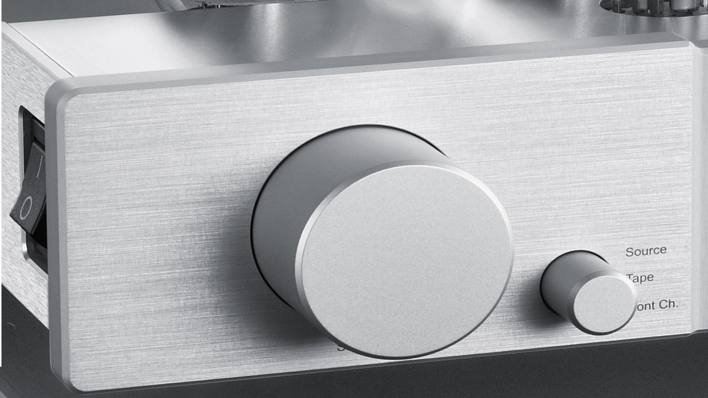

Octave Audio · Karlsbad, Deutschland · с 1968
О нас
Звук в его прекраснейшей форме
Есть ли у музыки душа? Мы убеждены — да. И наша работа состоит в том, чтобы ни малейшая её часть не была потеряна на пути от источника до вас.
Совершенство требует времени
Каждый усилитель Octave проходит через руки наших мастеров в Карлсбаде — от намотки трансформатора до финального прослушивания. Никаких конвейеров. Никаких компромиссов. Мы производим ограниченное число приборов в год — именно столько, сколько позволяет сохранить высочайшее качество каждого изделия.
В мире, где многое производится быстро и дёшево, мы намеренно выбираем медленный путь. Потому что медленное — значит правильное. Потому что именно здесь рождается музыкальность, которую вы слышите.
Технологии служат музыке
Наш фирменный Power Management, система Soft-Start и уникальный контроль тока покоя — это не маркетинговые приёмы, а решения реальных инженерных задач. Каждое принято ради одного: чтобы вы слышали именно то, что задумал музыкант.
Ламповые усилители имеют свою природу — и эта природа требует уважения. Мы не пытаемся скрыть или «исправить» характер лампового звука. Мы раскрываем его лучшие качества, убирая всё лишнее.
Верность слушателю
Мы продаём не устройства — мы передаём вам инструмент для общения с музыкой. Именно поэтому наши усилители спроектированы так, чтобы служить десятилетиями, обновляться, адаптироваться — и всегда оставаться в центре вашей системы.
Команда
За каждым усилителем Octave стоит небольшая, но исключительно преданная своему делу команда инженеров и мастеров в Карлсбаде. Большинство сотрудников работают с нами более десяти лет — многие пришли сразу после получения специальности и остались навсегда.
Конструкторский отдел
Разработка схемотехники, выбор компонентов, прослушивание прототипов. Каждый новый продукт — это годы работы нашего R&D отдела под руководством Андреаса Хофманна.
Производство
Ручная сборка в Карлсбаде. Каждый усилитель собирается одним мастером от начала до конца — это гарантирует ответственность и гордость за каждое готовое изделие.
Контроль качества
Многоэтапный технический контроль и финальное прослушивание каждого прибора. Усилитель, покидающий наш завод, прошёл более 20 проверочных точек.
Технологии
Наши фирменные технологии разработаны для решения реальных проблем, с которыми сталкиваются ламповые усилители в реальных условиях эксплуатации.
Power Management
Интеллектуальная система управления питанием контролирует рабочую точку ламп в реальном времени. Результат — стабильность звучания независимо от типа используемых ламп и степени их износа.
Soft-Start
Запатентованная система плавного пуска защищает лампы и выходные трансформаторы от токовых ударов при включении. MTBF ламп в усилителях Octave в 3–5 раз превышает среднеотраслевые показатели.
Совместимость с лампами
Большинство усилителей Octave допускают использование нескольких типов выходных ламп — EL34, 6550, KT88, KT120, KT150 — без перенастройки. Это уникальная гибкость в классе Hi-End.
Производство
Все усилители Octave производятся вручную на заводе в Карлсбаде (Баден-Вюртемберг, Германия). Мы используем только компоненты высшего класса от проверенных европейских и японских поставщиков.
Трансформаторы — сердце каждого лампового усилителя — мы наматываем самостоятельно. Это позволяет нам полностью контролировать качество ключевого узла и оптимизировать его под конкретную схемотехническую задачу.
«Made in Germany» для нас — не маркетинговый лейбл. Это обязательство перед покупателем: каждый усилитель, покинувший Карлсбад, несёт в себе знания и труд конкретных людей, которые отвечают за своё изделие своим именем.
История
Более полувека непрерывного развития — от первого лампового усилителя до сегодняшних флагманов линии Jubilee.
Андреас Хофманн основывает Octave в Карлсбаде. Первый продукт — интегральный ламповый усилитель. С самого начала — ставка на качество сборки и звучания.
Выпуск модели V 50 — усилителя, который завоевал преданную аудиторию в Германии и впервые вывел Octave на международный рынок.
Разработка фирменной технологии Power Management. Впервые в ламповом Hi-End — автоматический контроль тока покоя в реальном времени.
Серия HP 300 становится первым предусилителем Octave. Международное признание, первые поставки в Японию и США.
Выпуск V 70 — легенды серии. Усилитель остаётся в производстве более 20 лет в различных исполнениях.
Дебют серии MRE — монофонических усилителей мощности высшего класса. Выход в сегмент стоимостью выше €10 000.
V 80 SE получает международные награды. Octave прочно входит в число топ-5 ламповых производителей мира по версии ведущих audiophile-изданий.
Начало разработки линии Jubilee — юбилейной серии, посвящённой 50-летию компании. Новый уровень дизайна и технических решений.
Официальный выпуск Jubilee Line: Jubilee Mono Ultimate, Jubilee Class A, Jubilee 300 B. Три усилителя — три воплощения совершенства.
Дебют Jubilee Preamp SE — флагманского предусилителя линии Jubilee. Продолжение истории в новой главе.
Авторизованные дилеры
Продукция Octave продаётся исключительно через сеть авторизованных дилеров. Найдите ближайшего к вам специалиста.
Найти дилера →Форма обратной связи
Есть вопросы о продукции, совместимости или доступности в вашем регионе? Мы рады ответить.
Написать нам →